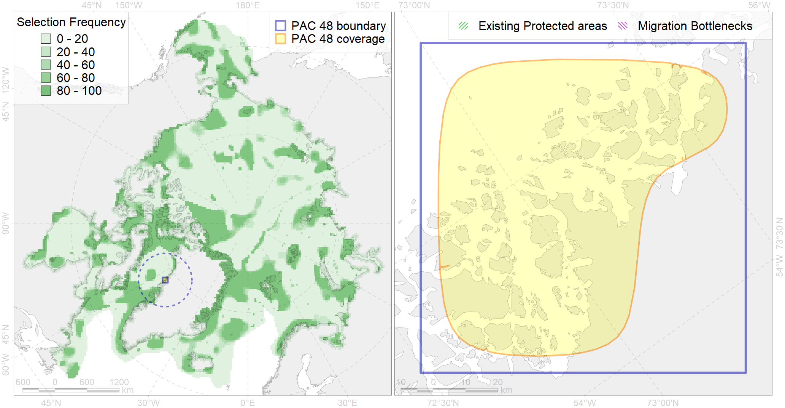

Region 48
Region 48
“ArcNet” scenario 33 achievement for region 48.
Use Accenter for advanced mode.

0
CFs inside of Region completely
0
CFs inside of Region at quarter
0
Complete-targets achievement by Region
0
Half-targets achievement by Region
| CF | Name | Target Achievement for Region | Proportion of Target Achievement in Region | Amount Proportion in Region |
|---|---|---|---|---|
| 6071 | King eider (Somateria spectabilis) Canadian moulting&migration stopovers | 22.4% | 17.7% | 14.4% |
| 6058 | Common eider (Somateria mollissima borealis) West Greenland breeding&moulting grounds | 9.9% | 9.9% | 9.1% |
| 9021 | polar bear denning areas of BB (Baffin Bay) subpopulation | 4.5% | 4.5% | 4.0% |
| 7034 | North-western Greenland region | 13.2% | 8.1% | 3.7% |
| 7149 | III.3.1.1. NW Greenland medium and low profile shelf | 20.0% | 5.0% | 3.0% |
| 8040 | Greenland glacial termini | 6.6% | 5.2% | 3.0% |
| 7243 | Kelp forests of western Greenland | 5.9% | 3.5% | 2.5% |
| 6095 | 6095 PagophileburneEGreenland breeding colonies | 3.3% | 3.2% | 1.9% |
| 7148 | III.3. 1. Northwest Greenland shelf | 9.3% | 2.3% | 1.4% |
| 6018 | Long-tailed duck (Clangula hyemalis) Greenland moulting&migration stopovers | 1.3% | 1.3% | 1.4% |
| 6091 | 6091 Little auk breeding colonies of A. alle alle Greenland Canada | 1.9% | 1.4% | 1.3% |
| 6029 | Glaucous gull (Larus hyperboreus euceretes) breeding grounds | 5.7% | 1.3% | 0.9% |
| 3123 | polynya Greenland W | 6.0% | 1.0% | 0.9% |
| 2007 | Bearded seal whelping areas in the Baffin Bay | 2.7% | 0.9% | 0.9% |
| 6015 | Black guillemot (Cepphus grylle mandti) breeding grounds | 5.0% | 1.1% | 0.8% |
| 7151 | III.3.2. NW Greenland slope | 3.6% | 1.2% | 0.7% |
| 6031 | Little auk (Alle alle alle) breeding colonies in Greenland and Canada | 0.6% | 0.6% | 0.7% |
| 5103 | Bowhead whale Baffin population spring-autumn distribution | 1.4% | 0.8% | 0.5% |
| 6106 | 6106 Urilomvilomvibreeding colonies | 0.5% | 0.3% | 0.3% |
| 4085 | Fish zoogeography, Arctic Region, Subarctic Transitional-Atlantic Province, Labrador – S Greenland District | 2.6% | 0.5% | 0.3% |
| 6047 | Black-legged kittiwake (Rissa tridactyla pollicarius) breeding colonies | 0.4% | 0.3% | 0.3% |
| 6099 | 6099 Rissa tridactyla tridactyla breeding colonies | 0.3% | 0.3% | 0.2% |
| 4053 | Range of the Fourhorn Sculpin (Myoxocephalus quadricornis) (F 45), Euro-Asian populations | 4.7% | 0.3% | 0.2% |
| 6034 | Ivory gull (Pagophila eburnea) Atlantic wintering grounds | 0.6% | 0.3% | 0.2% |
| 4055 | Range of the Shorthorn Sculpin (Myoxocephalus scorpius) (F 46), American populations | 3.6% | 0.2% | 0.1% |
| 4032 | Range of the Arctic skate (Amblyraja hyperborea) (F2) | 3.1% | 0.2% | 0.1% |
| 3021 | Marginal Ice Zone distribution in April in the Baffin Bay LME | 0.8% | 0.1% | 0.1% |
| 5104 | Bowhead whale Baffin population winter distribution | 0.3% | 0.2% | 0.1% |
| 4046 | Range of the Thorny Skate (Amblyraja radiata) (F 3) | 0.9% | 0.2% | 0.1% |
| 4059 | Range of the Greenland Halibut (Reinhardtius hippoglossoides) (F 49) | 2.1% | 0.2% | 0.1% |
| 5112 | Arctic Cetaceans (beluga, bowhead, narwhal) winter habitats as predicterd by MIZ | 0.1% | 0.1% | 0.1% |
| 6083 | Thick-billed murre (Uria lomvia lomvia) wintering grounds | 0.2% | 0.2% | 0.1% |
| 4003 | Range of the Atlantic Capelin (Mallotus villosus) (F10) | 1.8% | 0.2% | 0.1% |
| 4017 | Feeding/ migration area of the Greenland Shark (Somniosus microcephalus) (F1) | 0.2% | 0.1% | 0.1% |
| 4037 | Distribution of the Glacial cod (Arctogadus glacialis) (F34) | 0.5% | 0.1% | 0.1% |
| 4056 | Distribution of the American Plaice (Hippoglossoides platessoides) (F 47), European populations | 1.5% | 0.1% | 0.1% |
| 4041 | Range of the Polar Cod (Boreogadus saida) (F35) | 0.1% | 0.1% | 0.0% |
| 9002 | polar bear of the BB (Baffin Bay) subpopulation distribution | 0.0% | 0.0% | 0.0% |
| 2044 | Ringed seal whelping areas in the Baffin Bay region | 0.0% | 0.0% | 0.0% |